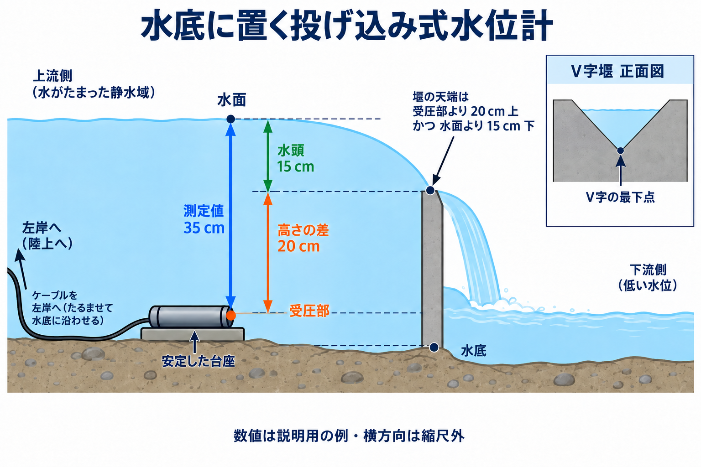

量水堰とは？水位から流量を測る仕組み
元の質問
量水堰とはなに？
量水堰は、水位から流量を求める施設
量水堰（りょうすいぜき）は、水路を横切るように設置し、堰を越える水の水位から流量を求める施設です。流量とは、単位時間に通過する水の体積で、「毎秒何リットル流れているか」を表します。適切な形状と流れの条件を整えると、上流の水位と流量が対応するため、水位を測って流量に換算できます。[1]
代表例は、板にV字形の切り欠きを設けた三角堰や、長方形の切り欠きを設けた四角堰です。量水堰には、薄い板を使う形式のほか、流れる方向に厚みのある堰もあります。以下では、仕組みをつかみやすい薄板の三角堰を例に説明します。[2]
水を集め、水位を測り、換算する
測定は次の順序で行います。流量への換算には、その堰の形状・寸法・設置条件に合った換算式や換算表を使います。[1][2]
- 水を切り欠きへ通す。上流から来た水が堰のV字形の開口を越えて、下流へ流れます。
- 上流の水位を測る。三角堰では、V字の最下点を基準にして、上流の測定位置にある水面までの高さを読み取ります。
- 水位を流量に換算する。対応する換算表や水位–流量曲線から、その時点の流量を求めます。
例えば、切り欠きの最下点を基準に水面が10 cm高い場合、換算に使う水位は10 cmです。これは測り方を示す仮想例です。同じ10 cmでも、切り欠きの角度や寸法が変われば流量も変わるため、対応する換算関係を選ぶ必要があります。[1][2]
水位は、堰から上流へ離れた位置で測る
切り欠きに近づくと水が加速し、水面が下がります。この影響を受けにくい上流の位置で測ることが重要です。米国開拓局の薄板堰の指針では、想定する最大の測定水頭の4倍以上、堰から上流へ離れた位置を指定しています。測定水頭とは、堰の基準高さから水面までの高さです。[2][3]
例えば最大の測定水頭を20 cmとするなら、この距離の条件は80 cm以上になります。ただし、実際の設置では上流の流れや水路の寸法なども確認します。距離だけで測定条件がすべて満たされるわけではありません。[3]
設置場所は、堰の上流側にある、流れが緩やかで水面が安定した区間から選びます。堰のすぐ手前では水面の低下により水頭を小さく読み取るおそれがあります。一方、離れすぎても堰に対応しない水位を測るおそれがあります。「4倍以上」を満たしたうえで、使用する流量換算式の測定位置と上流の流れの条件を確認します。水路の側方で測る場合も、その場所の水面が代表的な水位になっているか確認します。[4]
波立つ場合は、測定位置の水路と連通する静水井（せいすいい）に水位計を設置できます。静水井は、水路の水位を伝えながら波の影響を和らげる井戸状の設備です。この場合は、水路から水位を伝える取水口の位置が重要です。連通管の土砂詰まりや空気だまり、水位変化への追従の遅れも点検します。[2][4]
測定値のゼロは、三角堰のV字の最下点の高さに合わせます。水位計本体をその高さに置くという意味ではありません。センサーの設置高さを基準点と結び付け、読み取り値を「V字の最下点から水面までの高さ」に換算します。[2]
三角堰は小さな流量の測定に向く
三角堰では、底に近いほど開口が狭いため、小さな流量でも測定に必要な水頭を確保しやすくなります。この性質は小流量の測定に有利です。ただし、極端に水頭が小さいと、水位の読み取り誤差や水の板への付着が問題になるため、適用できる流量の下限があります。[5]
換算関係が成り立つ状態を維持する
水位から正しく流量を求めるには、換算式や換算表を作ったときの条件を保ちます。特に薄板堰では、次の確認が必要です。[2][3][6]
- 下流へ水が自由に落ちる状態を保つ。下流水位が上がって堰が水没すると、通常の上流水位だけによる換算は精度を失います。落下する水の膜の下に空気が入ることも重要です。
- 土砂や落ち葉を取り除く。上流の堆積物や開口の詰まりは、流れの条件を変えます。
- 堰の周囲の漏水を点検する。切り欠きを通らずに漏れた水は、その切り欠きの換算から得られる流量に含まれません。
- 切り欠きの形と水位計の基準高さを確認する。縁の変形や水位計のゼロ点のずれは、流量の誤差につながります。
投げ込み式水位計は、受圧部の高さを測って固定する
投げ込み式（圧力式）水位計の設置深さには自由度がありますが、観測中に水没し続け、測定範囲内に収まる位置を選びます。水底に置く場合は、堰の上流の穏やかな測定区間で、安定した台座などに載せてセンサーが動かないよう固定します。設置姿勢は機器の説明書に従い、受圧部の開口を塞がないようにします。三角堰で低水頭まで観測する場合、V字の最下点より低い位置に受圧部を置くと水没を保ちやすくなります。底の土砂に埋まらないよう配置し、現地の最低水位と機器の仕様を確認します。[7][6]
高さの基準にするのは、水圧を感じる「受圧部」です。水位計本体の上端やケーブルの先端とは区別し、機器の説明書で受圧部と測定基準位置を確認します。受圧部の高さを堰のV字の最下点と結び付けて記録すると、水圧から求めた水深を流量計算用の水頭へ換算できます。[7][2]
図1は、高さの補正を説明する仮想例です。受圧部がV字の最下点より20 cm低く、水面までの深さが35 cmなら、35 cmから20 cmを差し引いた15 cmが流量計算に使う水頭です。水底に置く場合も、高さの差は受圧部から測ります。台座の厚さや本体の太さによって、受圧部と水底の高さは異なります。

絶対圧式では、大気圧を補正してから水深へ換算します。この方式は水圧と大気圧の合計を測るため、対応する大気圧記録が必要です。大気開放式（ゲージ圧式）は通気管を通して大気圧を参照するため、通気管の乾燥と通気状態を維持します。圧力から水深への換算には水の密度も関わるので、温度や塩分、機器の換算設定を確認します。[7]
出力値が何を表すかを確認してから、高さを補正します。機器やソフトウェアが既に「堰の最下点を基準とする水位」を出力している場合、20 cmの補正を重ねると誤りになります。設置時と再設置時には基準点との高さを記録し、量水標などによる独立した水位測定と照合します。[7]
現地で量水堰を見るときは、水が越える開口、水位の測定位置、水位を流量へ換算する表や式の3点を確認すると、測定の仕組みを理解できます。
参照
- 米国開拓局 Water Measurement Manual：量水堰の定義（第7章2節）
- 米国開拓局 Water Measurement Manual：堰の分類・水頭・自由流出（第7章3節）
- 米国開拓局 Water Measurement Manual：薄板堰の測定条件（第7章5節）
- 米国開拓局 Water Measurement Manual：水位の測定位置と静水井の注意点（第5章11節）
- 米国開拓局 Water Measurement Manual：堰の選定と小流量の測定（第7章16節）
- 米国開拓局 Water Measurement Manual：堰の維持管理（第7章18節）
- Freeman et al. (2004), USGS：Use of Submersible Pressure Transducers in Water-Resources Investigations（設置・基準高さ・大気圧補正）。DOI: 10.3133/twri08A3